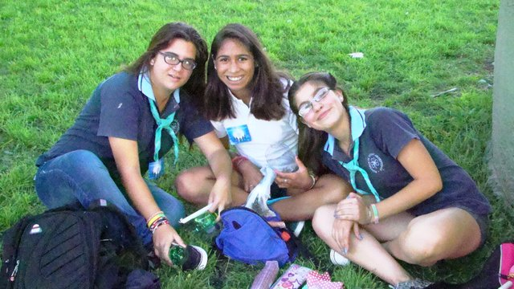
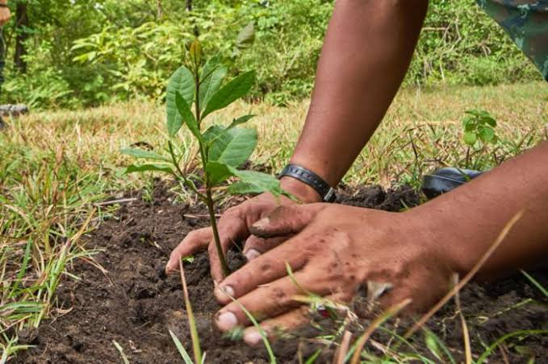

En Guías del Sol siempre elegimos nuestros propios proyectos de servicio pensando en lo que necesita nuestra comunidad. Este trimestre decidimos trabajar sobre el cuidado del ambiente en Berisso, organizando una jornada de limpieza y concientización en la zona costera y los senderos del monte ribereño.
Nos preparamos durante dos sábados estudiando cuáles son los árboles y plantas nativas de la ribera del Río de la Plata y cómo afecta la basura plástica a la fauna local. El día de la actividad nos dividimos en equipos con guantes y bolsas diferenciadas para separar residuos reciclables y despejar los caminos cercanos al agua.

Al cierre de la jornada plantamos ejemplares nativos junto a referentes ambientales de la zona y charlamos con familias que paseaban por el lugar. Fue una experiencia increíble comprobar que, con organización y compromiso, los jóvenes podemos cuidar nuestro entorno natural de forma concreta.